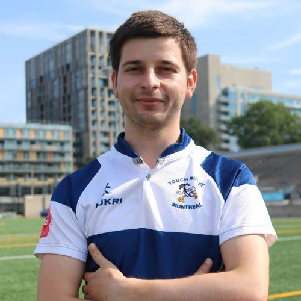
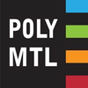
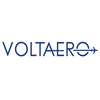
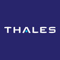
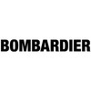

Grégoire Balmisse

Graduated in aerospace engineering, I have been passionate about aeronautics and space since my childhood.
My several experiences have allowed me to acquire good technical and managerial skills. My next challenge is to create a start-up.
Studies
ESCP: MS in Innovation & Entrepreneurship (2020-2021)

Polytechnique Montréal: Aerospace engineering (2014-2019)
Work Experiences

VoltAero
Aerodynamics Engineer (7 months)
- Conceptual and preliminary design of Cassio 2: Aerodynamics, Flight Performance, Battery preliminary sizing
- Subsystem modeling and analysis of Cassio on Amesim
- Flight test analysis and propeller pitch optimization of Cassio 1

Thales
R&D intern in hybrid and electric propulsion (3 months)
- Developing a conceptual tool to calculate the electrical powers required for the propulsion of hybrid and electrical vehicle such as VTOL, civil aircraft, business aircraft, UAV
- Developing equation for each vehicle category depending on the flight conditions and based on propeller aerodynamics, helicopter aerodynamics, aircraft aerodynamics, flight mechanics and flight performances

Bombardier
R&D internship in Thermodynamics (4 months)
- Developing a conceptual tool to predict the energy distribution (temperature and mass flow rate) along the wing for an anti-icing system with VBA and Fortran
- Calculate the efficiency of the wing anti-icing systems of Bombardier’s airplane
- Create a function to calculate the outlet temperature of a duct considering the convection and the radiation physics
Dassault Aviation
Airworthiness Internship: DO-PO agreement (4 months)
- Establish DO-PO agreements (Design Organisation Production Organisation)
- Contact and relaunch suppliers
- Analyze suppliers’ procedures and verify if they match Dassault requirements,
civil airworthiness requirements (EASA Part 21) and military (FRA21)
Hobbies
- Golf 🏌️♂️
- Tennis 🎾
- Rugby 🏉
- Flying 🛩️